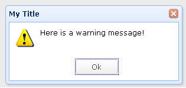

消息窗口提供了不同的消息框风格，包含alert(警告框), confirm(确认框), prompt(提示框), progress(进度框)等
所有的消息框都是异步的
用户可以在交互消息之后使用回调函数去处理结果或做一些自己需要处理的事情
如图: 
消息窗口的用法比较简单，如下代码
有$.messager.prompt、$.messager.progress、$.messager.show
这些方法中都有一些参数设置，如下的show方法
showType：定义将如何显示该消息。可用值有：null,slide,fade,show。默认：slide
showSpeed：定义窗口显示的过度时间。默认：600毫秒
width：定义消息窗口的宽度。默认：250px
height：定义消息窗口的高度。默认：100px
title：在头部面板显示的标题文本
msg：显示的消息文本
style：定义消息窗体的自定义样式
timeout：如果定义为0，消息窗体将不会自动关闭，除非用户关闭他。如果定义成非0的树，消息窗体将在超时后自动关闭。默认：4秒